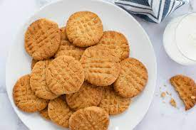

Simple Peanut Butter Cookies
Description
Requiring only a few ingredients, these peanut butter cookies are a joy to make. Full of peanut butter they hit all the right notes a cookie should have. Higher oven temperatures will result in a crispier cookie. Chilling the dough will keep the cookies taller in the oven. I usually use Jif smooth, but any quality peanut butter with or without nuts will work well. Makes approximately 1 1/2 dozen cookies.
Ingredients
- 1 cup Peanut Butter
- 1 cup white sugar
- 1 egg
- 3 tablespoons flour
Steps
- Preheat oven to 350°
- Combine all ingredients. Dough will be sticky.
- Using 2 spoons make 3/4" balls and place on cookie lined or greased cookie sheet.
- Bake for 10-12 minutes.
- Cool on a rack for at least 5 minutes.